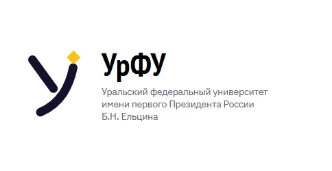
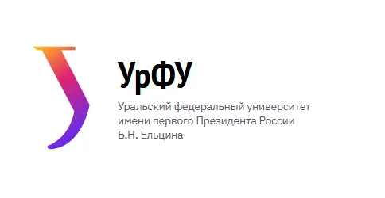
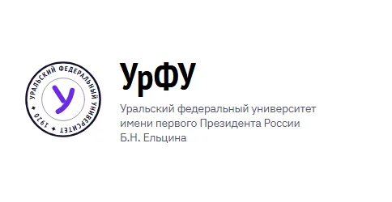
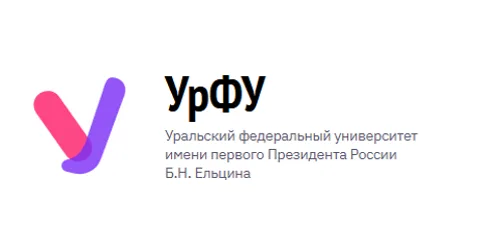
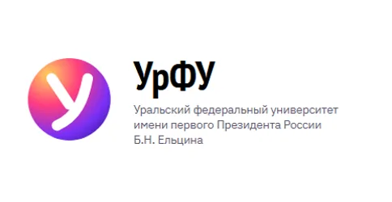
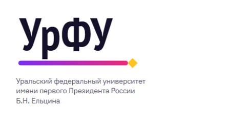
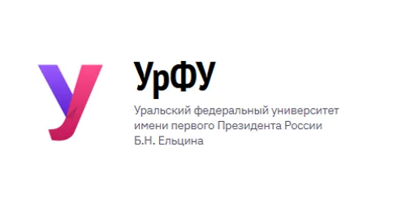

Знак и шрифт
федеральный
университет
России Б.Н.Ельцина
федеральный
университет
России Б.Н.Ельцина
Знак
Буква «У» из одной ленты: левая часть — аметист, правая — родонит, на сгибе — тень, будто лента повернулась. Плавный перелив внутри каждой части даёт объём. Знак одинаково хорошо смотрится на светлом и тёмном фоне, а при загрузке страницы по ленте пробегает блик.

Шрифты
Заголовки. Узкий шрифт студии ParaType, сделан для общественных надписей — как буквы на фасадах.
Текст, кнопки и формы: 400, 500, 600, 700. Оба шрифта с кириллицей и лежат в папке сайта — без внешних сервисов.
Основа и самоцветы
Яркие уральские самоцветы. Родонит — официальный камень Екатеринбурга, золото — символ Урала. Для каждого цвета указан контраст текста на нём: норма WCAG AA — от 4,5.
Как мы пришли к знаку
Мы нарисовали восемь вариантов и проверили каждый: в шапке, на тёмном фоне и в иконке 16 пикселей. Вот шесть, которые не прошли, — и почему.







Как пользоваться знаком
Правила, чтобы знак одинаково узнавался на сайте, в приложении, на мерче и в документах.
Четыре версии
- УральскийОсновнаяЦветной знак и надпись — на белом и светлом фоне.
федеральный
университет - УральскийНа тёмномЗнак тот же, надпись белая.
федеральный
университет - УральскийОдноцветнаяДля печати в одну краску, гравировки, документов.
федеральный
университет - УральскийБелаяНа фирменных цветах и на фото.
федеральный
университет
Свободное поле
Вокруг знака — пустое поле не меньше половины его ширины. Туда не заходят текст, края фото и другие знаки.
Самый маленький размер
Знак читается от 16 пикселей — так он выглядит во вкладке браузера. Знак с надписью — от 120 пикселей в ширину, в печати — от 25 мм.
Чего не делать
- Растягивать
- Поворачивать
- Менять цвета
- Добавлять обводку и тень
Как стиль живёт на страницах
Срезанный угол
Угол срезан, как грань огранённого камня: у плиток ролей и институтов, у фото, карточек и карты кампуса.
Фотографии
Настоящие снимки зданий и студентов УрФУ. Снизу — лёгкое затемнение, чтобы подпись на фото читалась.
Кнопки и фильтры
Основная кнопка — аметист, второстепенная — с тёмной рамкой, выбранный фильтр — тёмный.